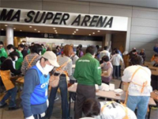
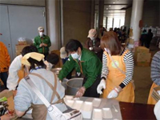
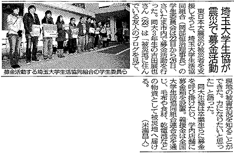

東北地方太平洋沖地震に対する被災地支援について
この度の東北地方太平洋沖地震で甚大な被害が発生し、被災された皆さまに心よりお見舞い申し上げますとともに、1日も早い復興をお祈り申し上げます。
●日本生協連災害対策本部会議報告から
★今後の「緊急支援物資」について
1.人員派遣と同送 ⇒ 物資を限定します。
 燃料：ガソリン、軽油、灯油（いわて・みやぎ・ふくしま）
燃料：ガソリン、軽油、灯油（いわて・みやぎ・ふくしま）
 食料：すぐ食べられる物のみ（いわて・みやぎ・ふくしま）
食料：すぐ食べられる物のみ（いわて・みやぎ・ふくしま）
果物、LLパン、レトルトカレー、カップ麺、真空パックの赤飯・ご飯、缶詰（魚、肉、果物）、ソーセージ（常温）、乾麺、インスタントみそ汁・スープ、お菓子類（クッキー、ビスケット、せんべい、チョコレート等）等。※C/S単位で。
 非食品：トイレットペーパー、生理用品、紙おむつ等。※C/S単位で。（ふくしま）
非食品：トイレットペーパー、生理用品、紙おむつ等。※C/S単位で。（ふくしま）
2.被災地生協へ直送 ⇒ 燃料以外は一旦終了します。
3.日本生協連DC納品 ⇒ 一旦終了します。
4.組合員等からのお見舞い品 ⇒ 日本生協連DCへの配送はご遠慮ください。
●県内生協の概況
○会員生協の取り組み
☆さいたまコープの炊き出しに、ドゥコープ・医療生協さいたまも人的支援で参加
- さいたまスーパーアリーナの避難者に対し、県社協・JC（青年会議所）と一緒に10：00～12：00にかけて、炊き出しを行いました。
本日（3/28）は、味噌おでんを1500食提供しました。
明日は、フランクフルト1500食の予定です。
|  |  |
☆医療生協さいたま
- 秩父生協病院
被災者の方がミューズパークのコテージ17棟65名避難されていました。組合員さん・MSW・看護師の3名で訪問。薬がなく仕事の関係で福島に帰る方を受診し、悪化した時のことも考慮し30日分の薬を出しました。
- 川口診療所
23日に西スポーツセンターに医師と看護師で健康相談に行った際に配った“紹介カード”を持参して3名（高血圧、不眠、風症状）が川口診療所を受診されました。
- 第5班が帰ってきました。
本日、第5班が帰ってきました。病院管理部と事務局職員が出向かえ報告会を行いました。若い職員が多くのことを学んで帰ってきてくれました。
☆大学生協
- 埼玉大学生協学生委員会の募金活動
3/22～26まで、募金活動を行いました。
|  |
埼玉新聞 3月27日掲載